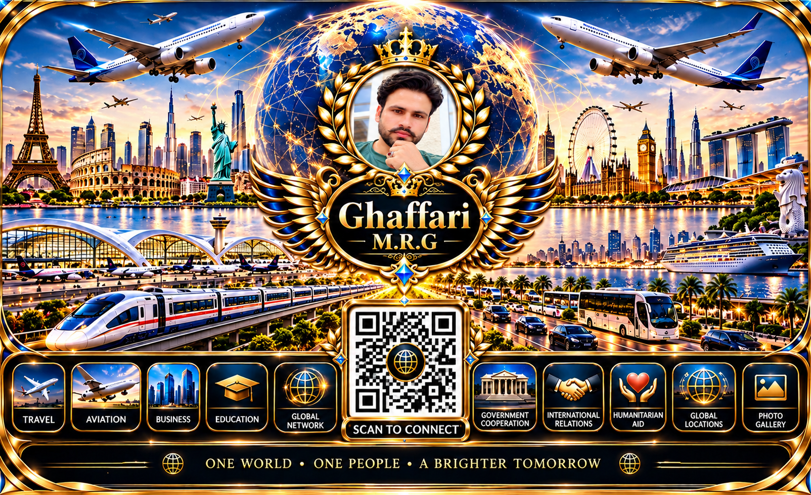

M.R.G GHAFFARI
Faith in Allah. Respect for All. Kindness Without Borders.
Contact Information
About Me
Connecting Hearts, Inspiring Kindness, Building a Better World.
I believe that every human being deserves respect, dignity, kindness, and compassion, regardless of nationality, culture, or faith.
My life philosophy is inspired by my faith in Allah, the Most Merciful, and the belief that we are here not only to live for ourselves, but also to bring goodness, hope, and ease into the lives of others.
Through my Islamic TikTok channel, I share faith-inspired reflections, positive reminders, and messages of peace, humanity, gratitude, and good character. My intention is never to judge or hurt anyone's beliefs, but to encourage understanding, kindness, and mutual respect.
I believe that our time in this world is temporary, and one day we will return to our Creator. What truly matters is the goodness we leave behind, the hearts we comfort, the difficulties we help ease, and the lives we touch with sincerity.
May we live in such a way that, when we stand before Allah, we can hope for His mercy, knowing that we sincerely tried to do good.
One World. One Humanity. Respect for All. Kindness Without Borders.
Additional Information
Global Connections • Friendship • Humanity • Positive Cooperation
I warmly welcome meaningful connections with people from all countries, cultures, and backgrounds.
I value sincere friendships, respectful communication, cultural understanding, and opportunities for positive cooperation.
Through my digital presence and Islamic TikTok channel, I hope to share inspiring messages of faith, peace, kindness, and humanity.
I believe that even a small act of kindness can make a meaningful difference in someone's life.
Open Hearts. Respectful Connections. A Better Tomorrow.
Everyone is welcome with respect, kindness, and goodwill.
میرے بارے میں
دلوں کو جوڑنا، نیکی کو فروغ دینا، اور دنیا کو بہتر بنانا۔
میرا یقین ہے کہ ہر انسان، چاہے وہ کسی بھی ملک، قوم، ثقافت یا مذہب سے تعلق رکھتا ہو، عزت، محبت، احترام اور حسنِ سلوک کا مستحق ہے۔
میری زندگی کی سوچ اللہ تعالیٰ کی رحمت پر ایمان اور اس یقین سے جڑی ہوئی ہے کہ ہم اس دنیا میں صرف اپنے لیے نہیں آئے، بلکہ ایک دوسرے کے لیے بھلائی، آسانیاں، امید اور خوشیاں پیدا کرنا بھی ہماری ذمہ داری ہے۔
اپنے اسلامی ٹک ٹاک چینل کے ذریعے میں ایمان افروز باتیں، مثبت پیغامات، اچھی نصیحتیں، امن، انسانیت، شکرگزاری اور حسنِ اخلاق کی اہمیت شیئر کرتا ہوں۔ میرا مقصد کسی کے مذہب یا عقیدے کو ٹھیس پہنچانا نہیں، بلکہ محبت، رواداری، باہمی احترام اور اچھائی کو فروغ دینا ہے۔
میرا ایمان ہے کہ یہ دنیا عارضی ہے، اور ایک دن ہم سب نے اپنے خالق کی طرف لوٹ کر جانا ہے۔ اس لیے اصل کامیابی صرف یہ نہیں کہ ہم نے اپنے لیے کیا حاصل کیا، بلکہ یہ بھی ہے کہ ہم نے کتنے دلوں کو سکون دیا، کتنی مشکلات آسان کیں، اور کتنے لوگوں کی زندگی میں بھلائی کا سبب بنے۔
اللہ تعالیٰ ہمیں ایسی زندگی گزارنے کی توفیق عطا فرمائے کہ جب ہم اس کے حضور حاضر ہوں تو اس کی رحمت کے امیدوار ہوں، اور ہمارا ضمیر گواہی دے کہ ہم نے اپنی استطاعت کے مطابق نیکی، انصاف اور انسانیت کی خدمت کرنے کی کوشش کی۔
ایک دنیا، ایک انسانیت، سب کا احترام، اور سرحدوں سے بالاتر محبت۔
اضافی معلومات
عالمی روابط، دوستی، انسانیت اور مثبت تعاون
میں دنیا کے تمام ممالک، ثقافتوں اور مختلف پس منظر سے تعلق رکھنے والے لوگوں کے ساتھ اچھے اور بامقصد روابط کا خیرمقدم کرتا ہوں۔
میں مخلص دوستی، باعزت گفتگو، مختلف ثقافتوں کی سمجھ بوجھ اور مثبت تعاون کو اہمیت دیتا ہوں۔
اپنی ڈیجیٹل سرگرمیوں اور اسلامی ٹک ٹاک چینل کے ذریعے میری خواہش ہے کہ ایمان، امن، محبت، حسنِ اخلاق اور انسانیت کے اچھے پیغامات دوسروں تک پہنچاؤں۔
میرا یقین ہے کہ کسی انسان کے لیے کی گئی چھوٹی سی نیکی بھی اس کی زندگی میں بڑی خوشی اور آسانی پیدا کر سکتی ہے۔
کھلے دل، باعزت تعلقات، اور ایک بہتر کل۔
ہر انسان کے لیے عزت، محبت اور خیرخواہی کے ساتھ خوش آمدید۔